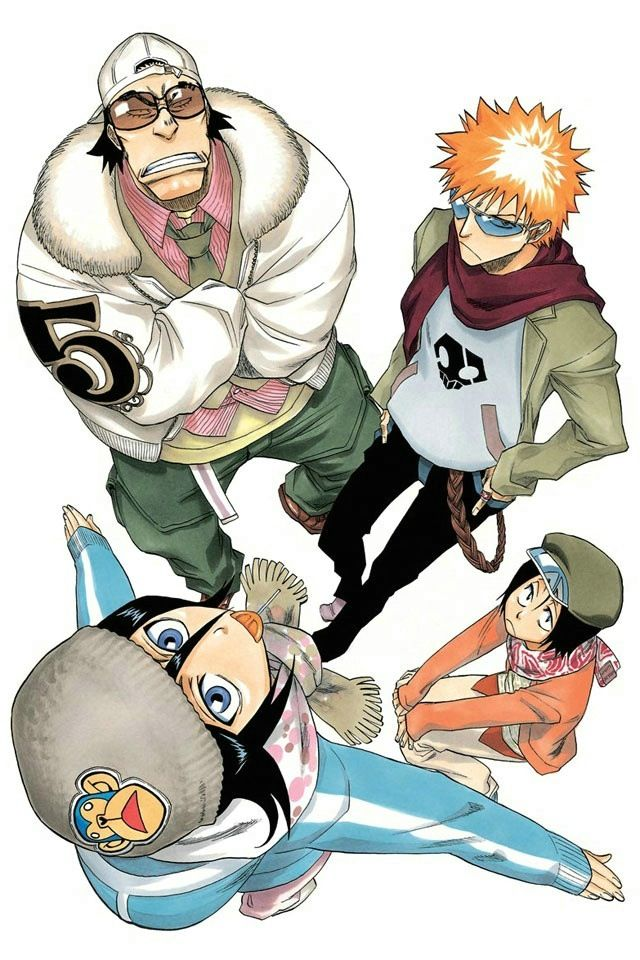

ganju, hanataro, ichigo & rukia

Q: "Back when Isshin was a Captain, Rangiku was the Vice-Captain while Hitsugaya was
the 3rd Seat. Why did Rangiku not advance to the position of Captain?"
A: "That's because Hitsugaya was more suited for the position of Captain and
also because he had already
achieved Bankai. By the way, by the time Hitsugaya had joined the Gotei 13 he had already achieved
Bankai."